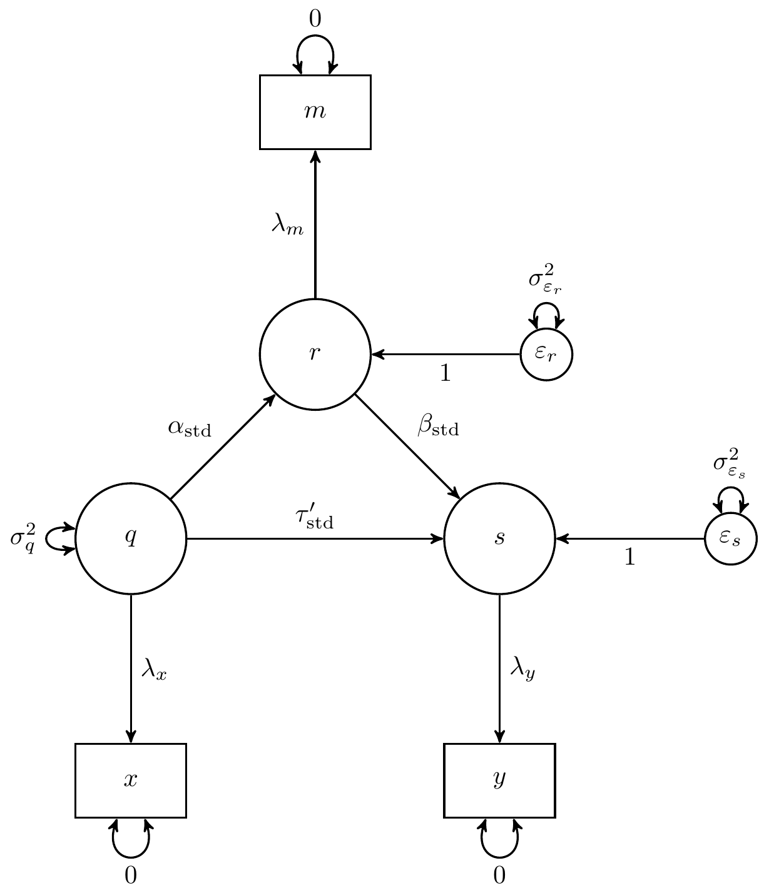

Reticular Action Model (RAM) Notation
1
Description
2
Reticular Action Model (RAM) Matrix Notation
2.1
Full Model
2.2
Given vs. Hidden Variables
3
Reticular Action Model (RAM) Path Diagram
4
Student’s
\(t\)
-test
4.1
Symbolic
4.1.1
Using the
ramR
Package
4.2
Numerical Example
4.2.1
\(t\)
-test
4.2.2
Linear Regression
4.2.3
Structural Equation Modeling
4.2.4
Using the
ramR
Package
4.3
Equations to RAM
4.4
Equations to Expectations
5
One-Way Analysis of Variance
5.1
Symbolic
5.1.1
Using the
ramR
Package
5.2
Numerical Example
5.2.1
One-Way Analysis of Variance
5.2.2
Linear Regression
5.2.3
Structural Equation Modeling
5.2.4
Using the
ramR
Package
5.3
Equations to RAM
5.4
Equations to Expectations
6
Two-Variable Regression Model
7
\(k\)
-Variable Regression Model
8
The Simple Mediation Model
8.1
Symbolic
8.1.1
Using the
ramR
Package
8.2
Numerical Example
8.2.1
Linear Regression
8.2.2
Structural Equation Modeling
8.2.3
Using the
ramR
Package
8.3
Equations to RAM
8.4
Equations to Expectations
9
The Standardized Simple Mediation Model
References
Published with bookdown
Reticular Action Model (RAM) Notation Notes
Chapter 9
The Standardized Simple Mediation Model

Figure 9.1: The Standardized Simple Mediation Model